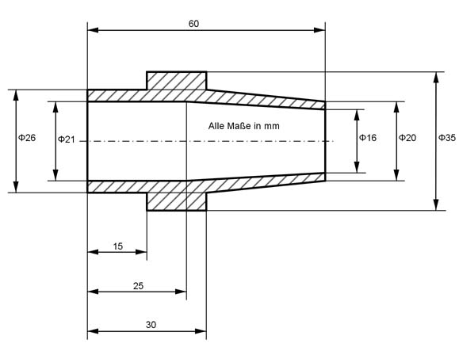

Aufgabe 294 Welche Masse m hat die Buchse bei einer Dichte von 8,3 g/cm³?  Volumen = = Kegelstumpf K1 + Zylinder Z1 + Zylinder Z2 - Kegelstumpf K2 - - Zyinder Z3 л * h K1 = -------- * (r1² + r1 * r2 + r2²) 3 r1 = 20 mm/2 = 10 mm = 1 cm r2 = 26 mm/2 = 13 mm = 1,3 cm h = 30 mm = 3 cm л * 3 K1 = -------- * (1² + 1 * 1,3 + 1,3²) cm³ 3 K1 = 12,53 cm³ л * h K2 = -------- * (r3² + r3 * r4 + r4²) 3 r3 = 21 mm/2 = 10,5 mm = 1,05 cm r4 = 16 mm/2 = 8 mm = 0,8 cm h = 35 mm = 3,5 cm л * 3 K2 = -------- * (1,05² + 1,05 * 0,8 + 0,8²) cm³ 3 K2 = 9,46 cm³ Z1: r5 = 26 mm/2 = 13 mm = 1,3 cm h1 = 15 mm = 1,5 cm Z1 = л * r5² * h1 Z1 = л * 1,3² * 1,5 cm³ = 7,96 cm³ Z2: r6 = 35 mm/2 = 17,5 mm = 1,75 cm h2 = 15 mm = 1,5 cm Z2 = л * r5² * h2 Z2 = л * 1,75² * 1,5 cm³ = 14,42 cm³ Z3: h3 = 25 mm = 2,5 cm Z3 = л * r3² * h3 Z3 = л * 1,05² * 2,5 cm³ = 8,65 cm³ V = 12,53 cm³ + 7,96 cm³ + 14,42 cm³ - 9,46 cm³ - 8,65 cm³ V = 16,8 cm³ m = V * ρ = 16,8 cm³ * 8,3 g/cm³ = 139,4 g